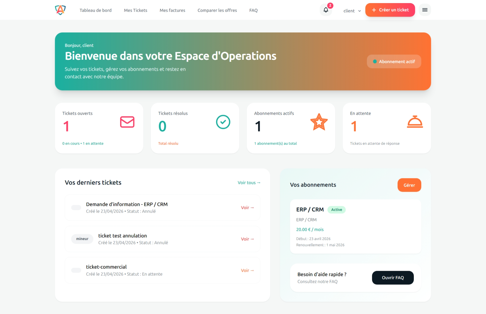
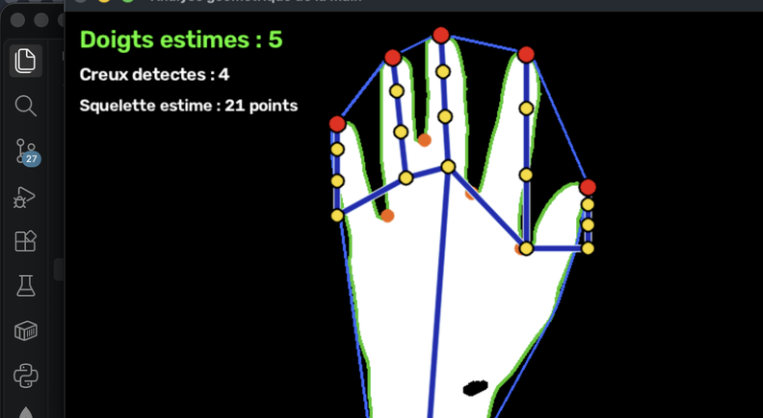

Sélection de projets / Archives
Projets
Une collection de réalisations, d’expérimentations et d’apprentissages.

01 / WebPortail ops
Une plateforme de gestion des opérations pour ANETSYS, regroupant les demandes clients, le suivi des tickets et la collaboration entre les équipes internes.
Découvrir → 02 / Web
02 / Web
Binggge
Architecture d’application web associant interface, API et base de données.
Découvrir → 03 / Web
03 / Web
Pastel Player
Lecteur Spotify pour Windows, développé avec Electron, React et TypeScript.
Découvrir →
04 / Structures de donnéesSuivi de la main et comptage des doigts
Projet de vision par ordinateur pour le suivi de la main et le comptage des doigts en temps réel.
Découvrir → 05 / WebCineVote
Projet web interactif autour du cinéma.
Découvrir → 06 /
3D
06 /
3D
Reconstruction 3D avec Three.js
Reconstruction et visualisation interactives d’objets avec WebGL.
Découvrir → 07 /
Web
07 /
Web
Agulha d'ouro
Un site vitrine développé pour l’Atelier Agulha D’Ouro, spécialisé dans la haute couture, les robes de mariée et les vêtements sur mesure.
Découvrir → 08 / Web
08 / Web
Billeterie
Un système de réservation de billets de cinéma permettant de parcourir les films, de choisir une séance et de réserver en ligne.
Découvrir → 09 /
Robotique
09 /
Robotique
Robot agricole
Suivi de rangs de culture, détection par caméra et robotique.
Découvrir → 10 /
Structures de données
10 /
Structures de données
World of IUT
Un jeu d’exploration textuel en C, centré sur les déplacements du joueur, les lieux interconnectés et la gestion dynamique de la mémoire avec des structures de données personnalisées.
Découvrir → 11 / Structures de donnéesTravel Salesman
Une implémentation du problème classique du voyageur de commerce utilisant différents algorithmes et techniques d’optimisation.
Découvrir → 12 / Structures de donnéesMath Calculation
Un projet de calcul mathématique illustrant l’utilisation des structures de données et des algorithmes pour résoudre des problèmes mathématiques complexes.
Découvrir → 13 / Bases de donnéesGestion d’une compagnie aérienne
Une mini-application Java connectée à MySQL avec JDBC pour gérer les avions, les pilotes, les vols, les passagers et les réservations.
Découvrir → 14 / Bases de donnéesBase de données électorale
Modélisation et schéma SQL d’une application électorale : utilisateurs, candidatures, votes, intégrité des données et publication des résultats.
Découvrir → 15 / Bases de donnéesModélisation d’une école de voile
Étude de cas du Cercle de Voile d’Épinal : modéliser les inscriptions, la désignation des moniteurs et l’affectation du matériel.
Découvrir → 16 / Bases de donnéesApprovisionnement d’une papeterie
Modélisation des données d’une chaîne d’approvisionnement impliquant fournisseurs, contrats d’achat, ports, sociétés portuaires et transporteurs.
Découvrir → 17 / SystèmesMini-shell sous Linux
Un interpréteur de commandes sous Linux : processus, commandes internes, redirections et tubes de communication.
Découvrir → 18 / SystèmesArchitecture réseau avec Packet Tracer
Conception et analyse d’une architecture réseau simple avec Cisco Packet Tracer pour comprendre les échanges entre machines.
Découvrir → 19 / SystèmesAdministration d’environnements virtuels
Travaux pratiques de création et d’administration de machines virtuelles : isolation, ressources matérielles et configuration réseau.
Découvrir → 20 / WebSocial Media Awards
Une plateforme PHP/MySQL pour proposer des créateurs de contenu, gérer leurs candidatures et voter pour ses favoris par catégorie.
Découvrir →